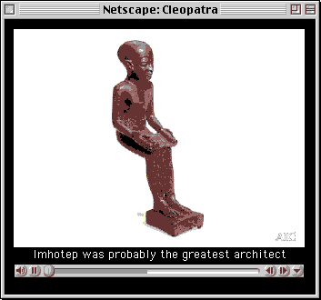

Cleopatra Home
To see the "Close-up" views of the Ancient Art objects, their "Stories" and listen to the Glossary pronunciations you will need QuickTime. You can download the free software by clicking below.

http://www.apple.com/quicktime/download/
CLOSE-UP:QuickTime VR’s
The views can be moved by clicking inside them and moving your mouse.
This is your tool bar. Use the to move in and the to move out.
STORIES:QuickTime Movies
Playing QuickTime Movies
Let the movie download completely and play automatically. You should not touch your keyboard or mouse while the movie downloads.
After the movie downloads completely it is stored in your systems memory cache.
When you replay the movie you can easily move through it using the tool bar.

Video Controls
This is your tool bar. Use the to play and the to pause.
You can play through the movie manually by using the button with a single line.

The
buttons on the right of the tool bar allow you to move forward and backward a few frames at a time
Audio Controls
The movie volume can be adjusted by holding down
and sliding the control up and down.
You can double the volume by holding down the "shift" key while changing the volume.
If these "Stories" are not opening, you will need to download QuickTime on your computer. (See above)
GLOSSARY: Audio
The Glossary entries can be heard by clicking on .
The movie volume can be adjusted by holding down
You can double the volume by holding down the "shift" key while changing the volume.
If these audio files are not opening, you will need to download QuickTime on your computer. (See above)
LESSON PLANS: Printing
Individual Lesson Plans can be printed through your Internet Browser.
Complete sets of Lesson Plans for each of the three grade categories can be printed by using Adobe Acrobat
A direct link to this free software is available on the "Print Lessons" page.
You can also go to their Website: http://www.adobe.com/products/acrobat/readstep.html
Help